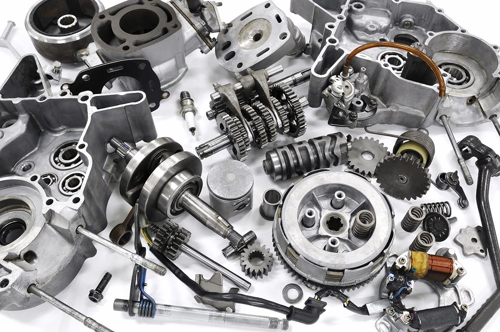

Os amortecedores são peças fundamentais para o desempenho e segurança de um veículo. Responsáveis
por absorver os impactos das irregularidades da estrada, essas peças garantem uma condução suave e
estável, além de contribuir para o controle e estabilidade do veículo em curvas e frenagens. Com o
tempo e o uso, os amortecedores podem se desgastar, comprometendo seu desempenho e até mesmo a
segurança do veículo. Por isso, é importante realizar inspeções regulares e substituir os
amortecedores quando necessário, garantindo uma condução segura e confortável em todas as condições
de estrada.

O sistema de freios é uma das partes mais críticas para a segurança de um veículo. As pastilhas de
freio desempenham um papel fundamental nesse sistema, sendo responsáveis por criar atrito com os
discos de freio para reduzir a velocidade do veículo. Ao longo do tempo, as pastilhas de freio se
desgastam devido ao atrito constante, tornando-se menos eficientes e aumentando a distância
necessária para parar o veículo. É essencial realizar inspeções regulares e substituir as pastilhas
de freio conforme recomendado pelo fabricante, garantindo assim a segurança do condutor, passageiros
e outros usuários da estrada.